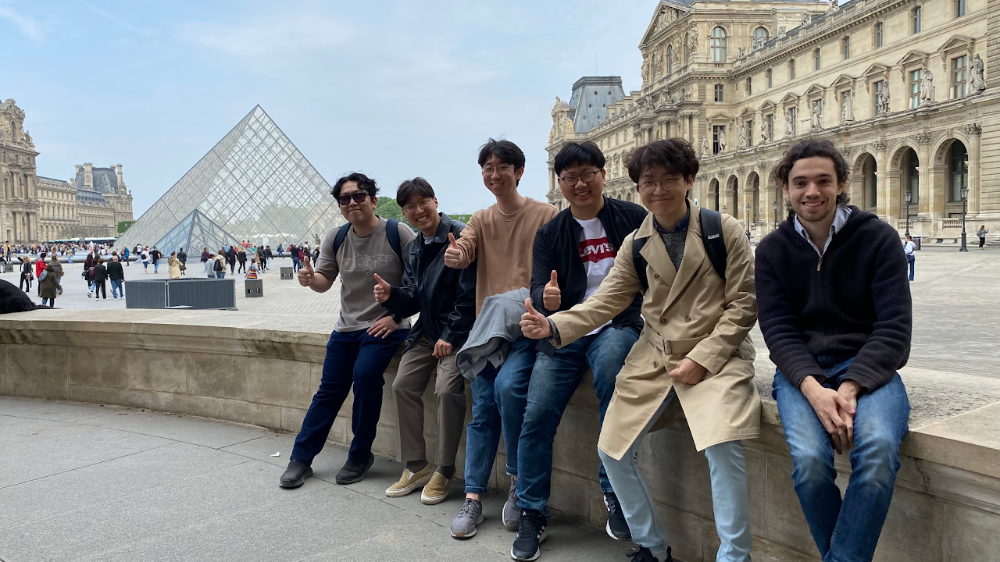
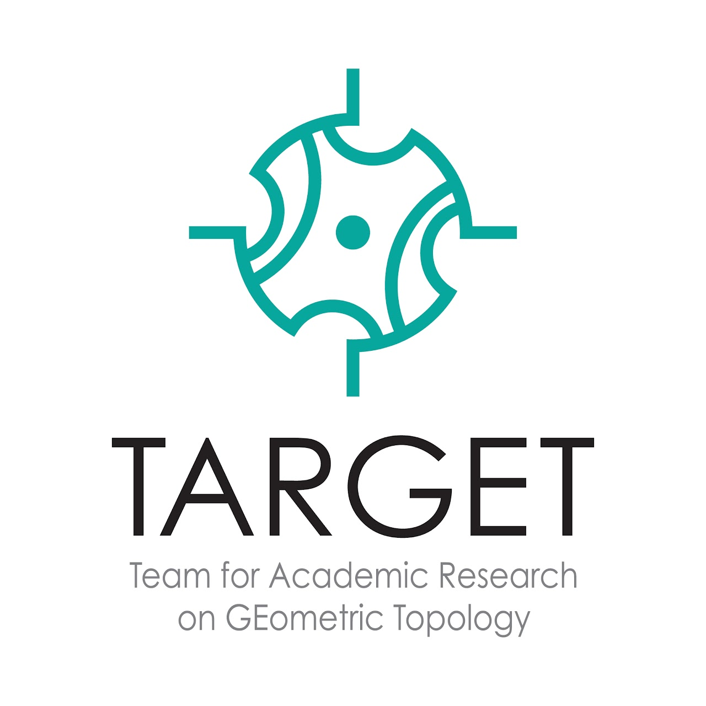
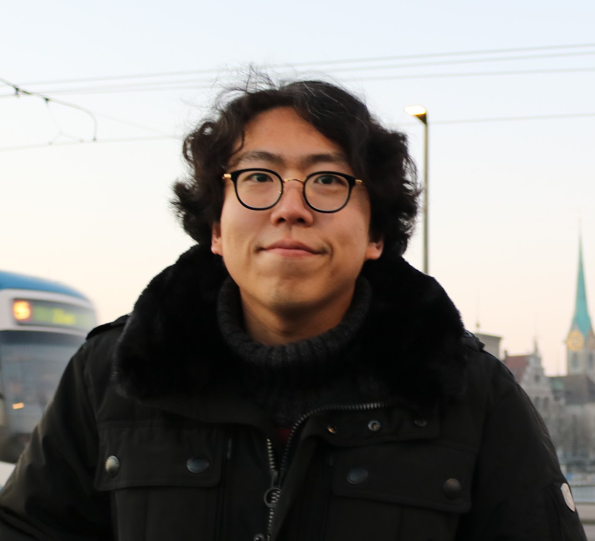
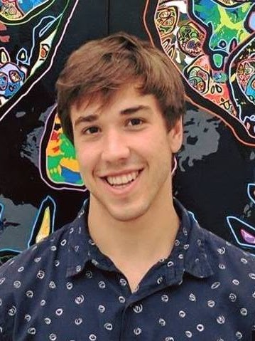
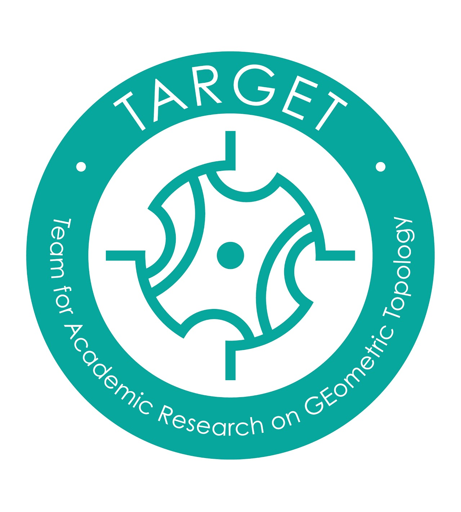

Research Group

KAIST 수리과학과 기하위상수학 및 기하군론 연구실 페이지입니다.
저희 연구실은 한국연구재단의 후원을 받고 있습니다.
Welcome to the webpage for Team for Academic Research on GEometric Topology.
Our research group is supported by National Research Foundation of Korea.
기하위상수학(Geometric topology), 기하군론(geometric group theory), 저차원 위상수학(low-dimensional topology), 타이휘뮐러 이론(Teichmüller theory) 등을 연구하고 있으며 연구원들의 최근 연구 토픽들 중 일부를 소개하면 다음과 같습니다.
Asymptotic translation length of pseudo-Anosov maps on either Teichmüller space or curve complex
Groups acting on the circle with invariant laminations
Random walks on the isometry group of hyperbolic spaces
Automorphisms and outer automorphisms of right-angled Artin groups
Generalization of Torelli groups
Subgroups of PSL(2,C) generated by two parabolics

연구책임자 (PI)

백형렬 Hyungryul Baik
(Tenured) Associate Professor (KAIST)
Cornell Ph.D. (2014)
- Advisor: William Thurston, John Hubbard, Dylan Thurston
- Thesis: Laminations on the circle and hyperbolic geometry
KAIST B.S. (2009)
Current members
Postdoctoral researchers
김잔 Jan Kim
Postdoctoral researcher (KAIST)
Graduate students

Brendan Murran
PhD student (KAIST)
Harvey Mudd College B.S. (2019)
Research Interest: Foliations and related topics
이홍준 Hongjun Lee
PhD student (KAIST)
KAIST B.S. (2022)
Research Interest: Teichmüller theory and related topics

오준성 Junseong O
PhD student (KAIST)
U of Seoul B.S. (2023)
Research Interest: Pseudo-Anosov diffeomorphisms
황세현
PhD student (KAIST)
Research Interest: Hyperbolic geometry
조민구
PhD student (KAIST)
Research Interest: Geometric Group Theory
Farisan Hafizh
M.S. student (KAIST)
Research Interest: Geometric Group Theory
Margarita Marchlewitz
Graduate student (KAIST)
Alumni and supervision history
이동하 Dongha Lee (co-advisor: Jingsung Park (KIAS)) (website). Phd Student during 2020.08-2026.02.
백주헌 Juhun Baik (webpage). Phd Student during 2019.06-2026.01.
김준석 Junseok Kim (webpage). PhD Student during 2018.06-2025.08. M.S. in Mathematics, KAIST, Feb. 2020.
장원용 Wonyong Jang (webpage). PhD Student during 2018.01-2025.02.
최인혁 Inhyeok Choi (webpage). PhD Student during 2018.12-2023.02.
정성구 Sunggu Jeong. PhD Student during 2018.09 -2023.02.
김창섭 Changsub Kim. PhD Student during 2018.01-2023.02.
Philippe Aurelio Tranchida (webpage). PhD student during 2018.08-2022.08.
오상록 Sangrok Oh (webpage). PhD student during 2018.09-2022.02.
김경로 Kyeong-Ro Kim (webpage). Phd student during 2017.06-2021.08. Ph.D. in Mathematics, KAIST, Aug. 2021.
김동률 Dongryul M. Kim (webpage). Undergraduate research student during 2019.08-2021.08.
곽상훈 Sanghoon Kwak (webpage). Undergraduate research student during 2018.01-2018.12.
Esmee Te Winkel. M.A. in Mathematics, University of Bonn, 2016. Subsequently received a Ph.D. at the University of Warwick.
Benjamin Wassermann. M.A. in Mathematics, University of Bonn, 2016 (secondary advisor). Subsequently received a Ph.D. at KIT.
Former postdoctoral researchers
Khanh Le — ended September 2026.
서동균 Donggyun Seo (webpage). Postdoc during 2020.09-2021.08.
News
(2026.7.1) Dr. Inhyeok Choi became a Professor at KIAS. Congratulations!
(2026.3.2) Farisan Hafizh joined our group, welcome!
(2025.12.2) Dongha Lee defended his PhD thesis successfully. Congratulations!
(2025.7.16) Mingu Cho and Sehyun Hwang joined our group, welcome!
(2025.6.20) Prof. Baik has been appointed as the Chief Professor of KAIST Graduate School of AI for Math.
(2025.5.27) Juhun Baik defended his PhD thesis successfully. Congratulations!
(2025.3.18) Junseok Kim defended his PhD thesis successfully. Congratulations!
(2025.3) The KAIST-KIAS joint research group, 2K-GATE, has been officially launched, with Prof. Hyungryul Baik (KAIST) as the Director and Prof. Sanghyun Kim (KIAS) as the Deputy Director.
(2024.12.5) Dr. Inhyeok Choi received Dissertation of the Year Awards from S-Oil. Congratulations! (Link)
(2024.11.1) Won Yong Jang defended his PhD thesis successfully. Congratulations!
(2024.9.2) Junseong O and Dongmin Lee joined our group, welcome!
(2024.7.25) Prof. Baik's article about 'Flows in 3-manifolds' appeared on KIAS webzine Horizon (Link)
(2024.1.15-19) Our group hosts KAIST Geometric Topology Fair 2024! (Link)
(2023.12.29) Prof. Baik's paper 'Asymptotic translation lengths and normal generation for pseudo-Anosov monodromies of fibered 3-manifolds' was selected as an excellent paper by the school of natural sciences at KAIST.
(2023.11.17) Prof. Baik's article about 'Ping-pong lemma' appeared on KIAS webzine Horizon (Link)
(2023.1.5) Hongjun Lee joined our group, welcome!
(2022.12.12) Inhyeok Choi defended his PhD thesis successfully. Congratulations!
(2022.11.28) Changsub Kim and Seonggu Jeong defended their PhD theses successfully. Congratulations!
(2022.8) Brendan Murran joined our group, welcome!
(2022.7) Prof. Baik's article about 'What is Topology?' appeared on KIAS webzine Horizon (Link).
(2022.6.17) Prof. Baik's story appeared on Weekly Chosun (Link).
(2022.6.14) Philippe Tranchida defended his PhD thesis successfully. Congratulations!
(2021.11.26) Sangrok Oh defended his PhD thesis successfully. Congratulations!
(2021.8) Dr. Kyeong-Ro Kim and Dr. Donggyun Seo are leaving for their new jobs at SNU. Congratulations!
(2021.6.8) Kyeong-Ro Kim defended his PhD thesis successfully. Congratulations!
(2020.12.10) Prof. Baik is selected as a new member of Y-KAST (Press, KAIST).
(2020.9.1) Dr. Donggyun Seo joined our group, welcome!
(2020.8.31) Dongha Lee joined our group, welcome!
(2020.5.1) Prof. Baik's research was introduced in KAIST Compass (News letter for the school of natural science) (Link).
(2020.3.18) Prof. Baik's research was selected for The Top Ten KAIST Research Achievements in 2019 (Link).
(2020.3.1) Prof. Baik received EWon Assistant Professorship for Outstanding Junior Faculty (Link).
(2019.8.30) Prof. Baik's collaboration with medical researchers was introduced through the press (Link).
(2019.6.20) Juhun Baik joined our group, welcome!
(2018.12.27) Inhyeok Choi joined our group, welcome!
(2018.12.17) Prof. Baik's article about 'coarse geometry' appeared on KIAS webzine Horizon (Link).
(2018.12.1) Prof. Baik joined the editorial board of KIAS webzine 'Horizon' (website).
(2018.11) Prof. Baik is introduced in KMS Newsletter for Nov. 2018 (Link).
(2018.11) Prof. Baik's article about 'topology and medical science' appeared in the newsletter for Korean Society of Interventional Cardiology (Link).
(2018.10) Prof. Baik's article about Adrien Douady appeared in the newsletter for Department of Mathematical Sciences, KAIST (Link).
(2018.10.05) Prof. Baik received Sangsan Prize for Young Mathematicians from Korean Mathematical Society (Press, KAIST).
(2018.8.27) Philippe Tranchida joined our group, welcome!
(2018.6.28) Jun seok Kim joined our group, welcome!
(2018.4.23) Prof. Baik's research was introduced in KAIST Compass (News letter for the school of natural science) (Link).
(2018.4.20) [Announcement] Topology session of KAIX Summer school will be held at KAIST from June 25 to July 2.
(2018.1.20) [Announcement] The 13th East Asian School of Knots and Related Topics will be held at KAIST from Jan 29 to Feb 1.
(2018.1.2) Changsub Kim and Won Yong Jang joined our group, welcome!
(2017.9.28) Prof. Baik got a research grant from Samsung Science & Technology Foundation (KAIST).
(2017.8.30) Prof. Baik was selected as a Posco Science Fellow by Posco TJ Park Foundation (Press, KAIST).
(2017.7) Prof. Baik's tribute for William Paul Thurston appeared in KMS Newsletter for Jul. 2017 (Link).
(2017.6) Kyeong-ro Kim joined our group, welcome!
(2017.5) Prof. Baik is introduced as new faculty and his short tribute for William Paul Thurston appeared in the newsletter for Department of Mathematical Sciences, KAIST (Link1, Link2).
(2017.5) Prof. Baik is introduced in KMS Newsletter for May 2017 as a new member of KMS (Link).
(2017.2.15) Prof. Baik joined KAIST Department of Mathematical Sciences as a faculty member.